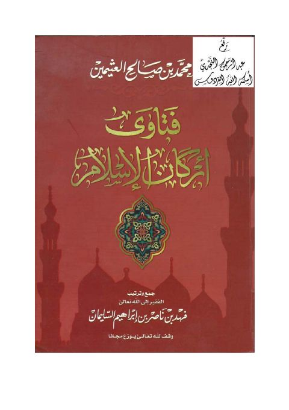

Downloads need an internet connection.
فتاوى أركان الإسلام
Authors: محمد بن صالح العثيمين
Editors: فهد بن ناصر بن إبراهيم السليمان
Publishers: الدار المصرية السعودية
**▫️ العنوان: فتاوى أركان الإسلام** ▪️ المؤلف: #محمد_بن_صالح_العثيمين ▫️ المحقق: #فهد_بن_ناصر_بن_إبراهيم_السليمان ▪️ الناشر: #الدار_المصرية_السعودية ▫️ تاريخ النشر: 1425هـ ▪️ بلد النشر: القاهرة، #مصر ▫️ الطبعة: 2 ▪️ عدد الأجزاء: 1 ▫️ الصفحات: 619 ▪️ نوع الوعاء: #كتاب ▫️ التصنيف الرئيسي: #العلماء_والمفكرون ۪